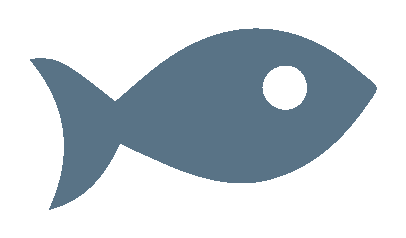
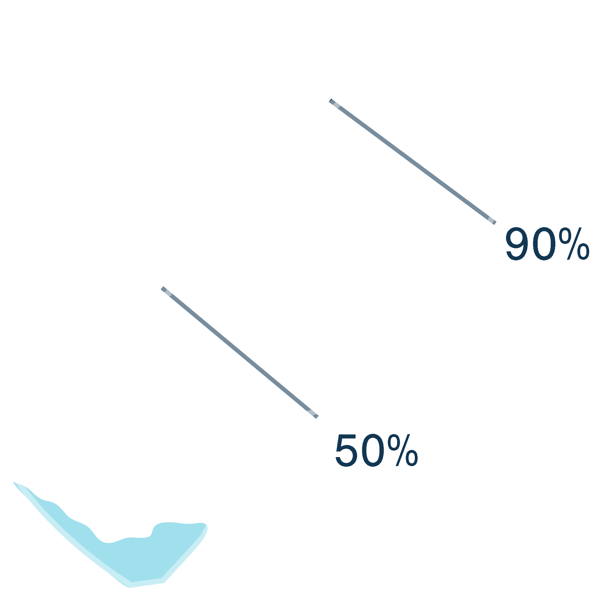

Trash accumulates in 5 ocean garbage patches, the largest one being the Great Pacific Garbage Patch, located
between Hawaii and California. If left to �circulate, the plastic will impact our ecosystems, health and economies.
Trash accumulates in 5 ocean garbage patches, the largest one being the Great Pacific Garbage Patch, located
between Hawaii and California. If left to �circulate, the plastic will impact our ecosystems, health and economies.

ENVIRONMENT
Plastic pollution in the world's �oceans is one of the biggest
environmental issues of our �time, impacting more than 600 �marine species.
ECONOMY
According to the United �Nations, plastic pollution is �conservatively estimated to have a yearly financial
damage of 13 billion USD. The costs stem from the plastic’s impact on marine life, tourism, fisheries
and businesses.
HEALTH
Plastic pollution does not only impact sea life, it also carries toxic pollutants into the food chain –
a food chain including� us humans.

Project Goals
The plan is to reach the full fleet of 60 systems by 2020, with the help of corporate sponsoring. Our aim is
to remove 50 % of the plastic waste in the Great Pacific Garbage Patch in 5 years' time from full-scale deployment.
After fleets of systems are deployed into every ocean gyre, combined with source reduction, The Ocean Cleanup
projects to be able to remove 90% of ocean plastic by 2040.
